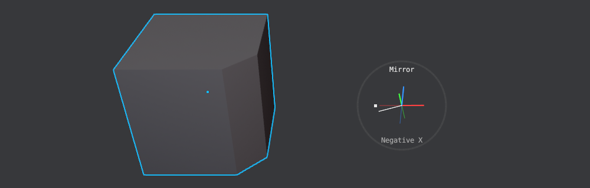
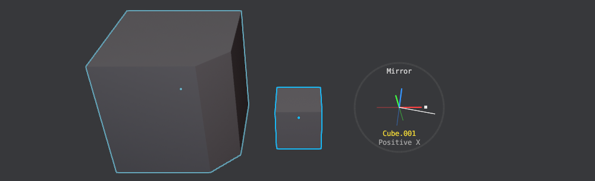
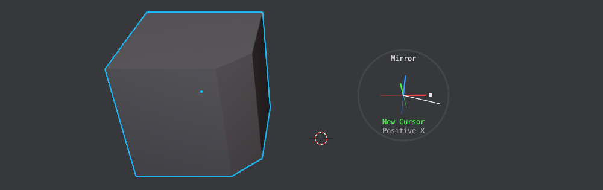
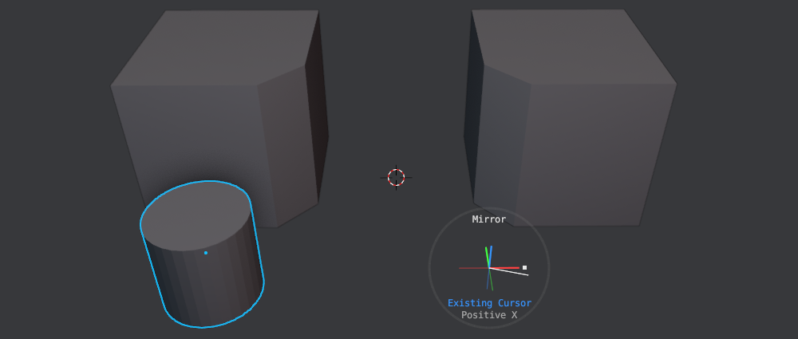
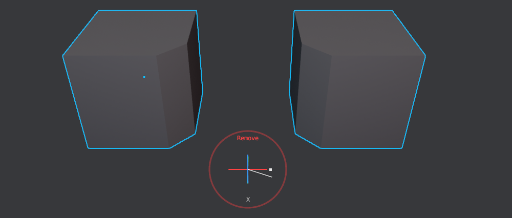
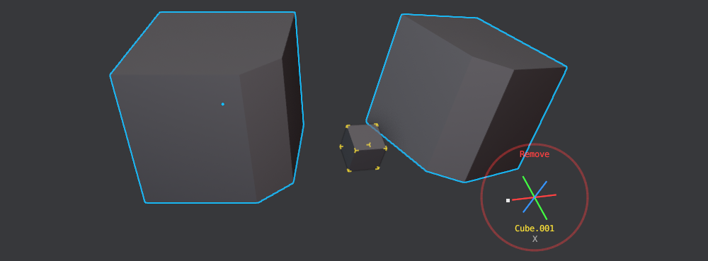
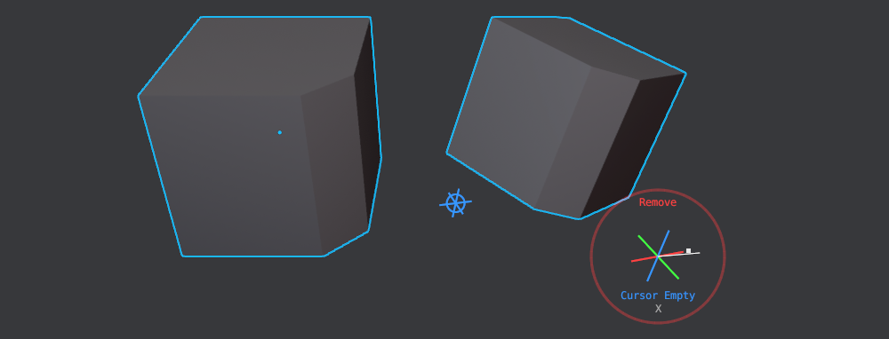

Mirror
shortcut SHIFT + ALT + X object mode
The Mirror tool has gotten a new modal frontend in version 1.1. This allows flick mirroring in the same way MESHmachine does flick symmetry, and it's done with a single keymap instead of three as before.
Note
The statusbar conveniently displays the available modal key options depending on the situation.
Add Mirror
You can call the tool with a single keymap now - a HUD will appear, and you can choose the mirror direction.
 move the mouse in the direction of one of the axes until you hit the circle to add a mirror mod
 with multiple objects selected, the active object will be mirrored across

with the C key you can toggle Cursor mirroring, which will create an empty at the cursor
 if an existing empty at the cursor exists, it will be re-used.
Note
You can toggle this behavior using the E key, which will then force the creation of a new cursor empty.
Remove Mirror
With existing mirror mods on the active object present, you can go into remove mode using the X or D keys.
 in this mode picking an axis will remove the last mod in stack that uses the chosen axis
Note that, if a mirror mod uses an object that has a misaligned orientation compared to the object that is mirrored, then this object will be highlighted in the 3d view, and the axes will be shown according to that misaligned object.

Keep in mind
With multiple mirror mods like this in the stack, you can scroll through these misaligned objects.
This is necessary because the flick axes need to properly represent the mirror axes in 3d space.
 misaligned cursor empties will be shown like this, the actual empty is hidden here
Finally, you can also remove all mirror mods of all selected objects by using the A key.
Selection
Any number of mesh objects or grease pencil objects.
DECALmachine
The tool will recognize DECALmachine's Decals and automatically adjust the Mirror mods to also flip the UVs
Using Mirror
Unmirror
The Unmirror tool simply removes the last mirror modifier in the stacks of the selected objects.
Note
With the 1.1 release, this tool is more or less obsolete, as the Mirror tool itself can remove mirror mods, and not just the last one in the stack, but the last one that matches a chosen axis. As such it will most likely be removed in upcoming releases.
Menu
Object Context Menu
Using Un-Mirror
Note
This is an old video, there no longer is support for Group Pro groups.
Mirroring MACHIN3tools groups already works as you'd expect.